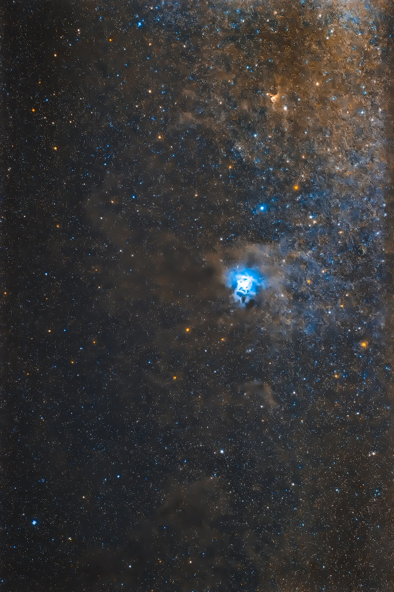
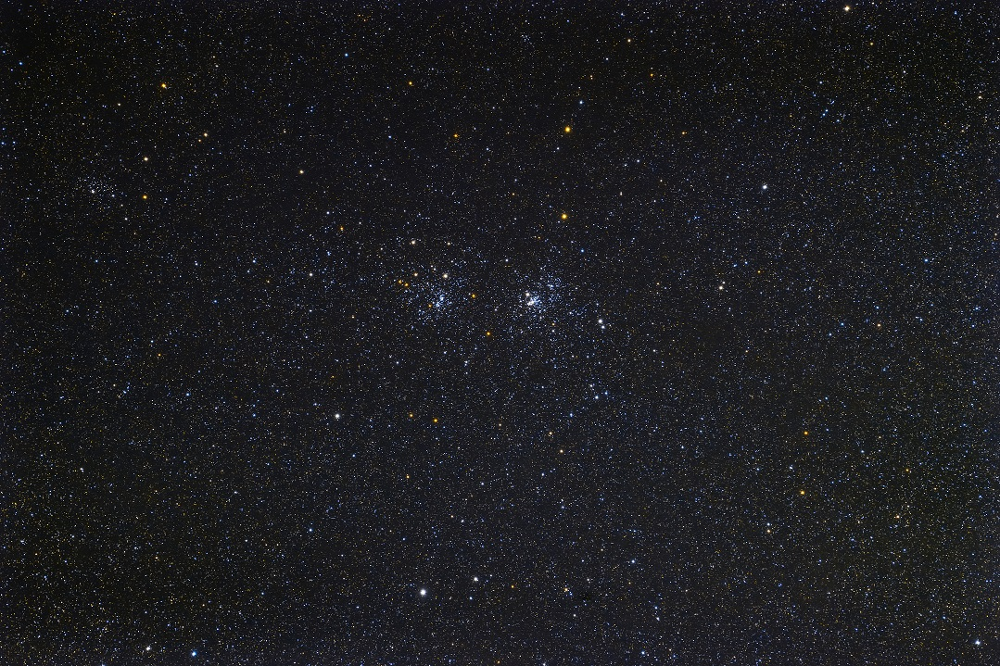
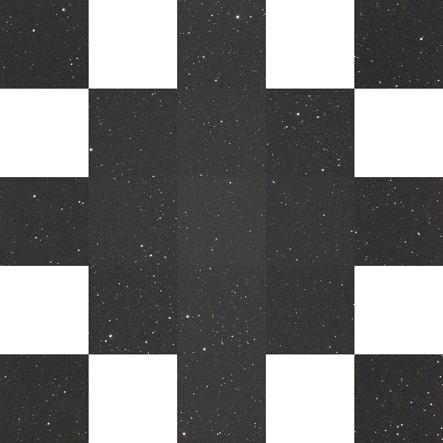

<!DOCTYPE html>
<html>

<head><meta name="generator" content="Hexo 3.8.0">
  <meta charset="utf-8">
  
  <title>【遠征記】2020年8月 星の村天文台 | ほしよみ大学生のブログ</title>
  <meta name="viewport" content="width=device-width">
  <meta name="description" content="あいさつ先週末はいつもどおりぶらっと天城に行ってきましたが，ここ数年天城に行き過ぎているというのもあり，今回は趣向を変えて星の村に行ってみました．結果，この夜は人生で忘れられない夜の一つになりました，そういうお話です．">
<meta name="keywords" content="天体写真,写真,機材,鏡筒,パーツ,遠征記">
<meta property="og:type" content="article">
<meta property="og:title" content="【遠征記】2020年8月 星の村天文台">
<meta property="og:url" content="http://dabokun.github.io/2020/08/22/00000037-2020-08-hoshinomura/index.html">
<meta property="og:site_name" content="ほしよみ大学生のブログ">
<meta property="og:description" content="あいさつ先週末はいつもどおりぶらっと天城に行ってきましたが，ここ数年天城に行き過ぎているというのもあり，今回は趣向を変えて星の村に行ってみました．結果，この夜は人生で忘れられない夜の一つになりました，そういうお話です．">
<meta property="og:locale" content="ja">
<meta property="og:image" content="http://dabokun.github.io/2020/08/22/00000037-2020-08-hoshinomura/card.jpg">
<meta property="og:updated_time" content="2020-10-28T17:15:42.000Z">
<meta name="twitter:card" content="summary_large_image">
<meta name="twitter:title" content="【遠征記】2020年8月 星の村天文台">
<meta name="twitter:description" content="あいさつ先週末はいつもどおりぶらっと天城に行ってきましたが，ここ数年天城に行き過ぎているというのもあり，今回は趣向を変えて星の村に行ってみました．結果，この夜は人生で忘れられない夜の一つになりました，そういうお話です．">
<meta name="twitter:image" content="http://dabokun.github.io/2020/08/22/00000037-2020-08-hoshinomura/card.jpg">
<meta name="twitter:creator" content="@dabo_pic">
  
  <link rel="alternative" href="/atom.xml" title="ほしよみ大学生のブログ" type="application/atom+xml">
  
  
  <link rel="icon" href="/images/favicon.png">
  
  <link rel="stylesheet" href="/css/style.css">
  <!--[if lt IE 9]><script src="//html5shiv.googlecode.com/svn/trunk/html5.js"></script><![endif]-->
  
</head></html>
<body>
  <div id="container">
    <div class="mobile-nav-panel">
	<i class="icon-reorder icon-large"></i>
</div>
<header id="header">
	<h1 class="blog-title">
		<a href="/">ほしよみ大学生のブログ</a>
	</h1>
	<nav class="nav">
		<ul>
			<li><a href="/">Home</a></li><li><a href="/categories">Categories</a></li><li><a href="/tags">Tags</a></li><li><a href="/archives">Archives</a></li><li><a href="/about">About</a></li><li><a href="/work">Work</a></li>
			<li><a id="nav-search-btn" class="nav-icon" title="Search"></a></li>
			<li><a href="https://github.com/dabokun"></a>
			</li>
			<li><a href="https://twitter.com/dabo_pic"></a></li>
			<li><a href="/atom.xml" id="nav-rss-link" class="nav-icon" title="RSS Feed"></a>
			</li>
		</ul>
	</nav>
	<div id="search-form-wrap">
		<form action="//google.com/search" method="get" accept-charset="UTF-8" class="search-form"><input type="search" name="q" class="search-form-input" placeholder="Search"><button type="submit" class="search-form-submit">&#xF002;</button><input type="hidden" name="sitesearch" value="http://dabokun.github.io"></form>
	</div>
</header>
    <div id="main">
      <article id="post-00000037-2020-08-hoshinomura" class="post">
	<footer class="entry-meta-header">
		<span class="meta-elements date">
			<a href="/2020/08/22/00000037-2020-08-hoshinomura/" class="article-date">
  <time datetime="2020-08-21T16:06:29.000Z" itemprop="datePublished">2020-08-22</time>
</a>
		</span>
		<span class="meta-elements author">astr0dab0</span>
		<div class="commentscount">
			
			<a href="http://dabokun.github.io/2020/08/22/00000037-2020-08-hoshinomura/#disqus_thread" class="article-comment-link">Comments</a>
			
		</div>
	</footer>
	
	<header class="entry-header">
		
  
    <h1 class="article-title entry-title" itemprop="name">
      【遠征記】2020年8月 星の村天文台
    </h1>
  

	</header>
	<div class="entry-content">
		
		
		<div id="toc" class="toc-article">
			<p class="toc-title">目次</p>
			<ol class="toc"><li class="toc-item toc-level-3"><a class="toc-link" href="#あいさつ"><span class="toc-number">1.</span> <span class="toc-text">あいさつ</span></a></li><li class="toc-item toc-level-3"><a class="toc-link" href="#星の村へ"><span class="toc-number">2.</span> <span class="toc-text">星の村へ</span></a></li><li class="toc-item toc-level-3"><a class="toc-link" href="#最高の眼視体験"><span class="toc-number">3.</span> <span class="toc-text">最高の眼視体験</span></a></li><li class="toc-item toc-level-3"><a class="toc-link" href="#撮影したもの"><span class="toc-number">4.</span> <span class="toc-text">撮影したもの</span></a></li></ol>
		</div>
		
		<h3 id="あいさつ"><a href="#あいさつ" class="headerlink" title="あいさつ"></a>あいさつ</h3><p>先週末はいつもどおりぶらっと天城に行ってきましたが，ここ数年天城に行き過ぎているというのもあり，今回は趣向を変えて星の村に行ってみました．<br>結果，この夜は人生で忘れられない夜の一つになりました，そういうお話です．</p>
<a id="more"></a>
<h3 id="星の村へ"><a href="#星の村へ" class="headerlink" title="星の村へ"></a>星の村へ</h3><p>日程の数日前の天気予報的には天城の雲量が一晩0だったので，天城に行くことを計画していましたが，日程が近づくにつれどんどん悪化していたため，行き先は千葉茨城方面，荒木根ダムが最有力候補でした．翌日夜に仕事があったので，あまり一人で遠くには行きたくなかったのです．<br>後輩の家の車を使わせてもらうか自分の家の車で行くか，機材の運搬をどうするかという問題もありましたが，結局，僕が東京の後輩の家まで行って，そこで機材を積み替えるということにしました．後輩の家の車を使えるなら，帰りの大部分を後輩の運転に任せれば遠出できる，ということになります．したがって，行き先は晴れそうな星の村天文台にしました．同行者は後輩と，友人で，僕と合わせて3人でした．</p>
<p>それこそ星の村に行く時くらいしか常磐道は通らないので，かなり新鮮な感覚でした．途中友部 SA で夕飯を食べ（ここの豚丼はなかなかの美味でした），途中スーパーに寄って9時半過ぎには星の村に到着．着いてみると曇っていて，天城の予報は当日に改善していたので，「あちゃー」と思いましたが，すぐに晴れだしました．ちぎれ雲みたいな雲が来たりもしましたが，基本一晩快晴でした．</p>
<h3 id="最高の眼視体験"><a href="#最高の眼視体験" class="headerlink" title="最高の眼視体験"></a>最高の眼視体験</h3><p>到着して歩いていると，何やら大型の機材を展開している方がいらっしゃいます．話しかけてみると，なんとあの TOA を2本使って双眼視しているそうです．図々しくも，たくさんの天体を見せていただきました．これが涎が出るほど美しく，間違いなく今まで最高の眼視体験をしました．見た順番はバラバラですが，感想を書きます．</p>
<ul>
<li>木星<br>まずは木星から．目のようにこちらを向いている大赤斑はもちろんのこと，赤道より北の大きな気流の流れもはっきりこの目で見ることができました．片目でも素晴らしいですが，両目で見ることで，それだけでは得られない立体感を感じました．北東側には衛星イオとその影が落ち込んでいるのが見え，太陽との三次元的な位置関係を感じました．正直，これを見た瞬間に言葉を失う以外ありませんでした．写真で見るような木星を，両の目で見ることができたわけです．大気の影響で常に良像というわけにはいきませんが，ときどき訪れる乱れが少なくなりとんでもなくよく見える瞬間のたびに呻き声を漏らしてしまいます．彩度は写真で見るよりも色鮮やかで，木星だけでも永遠に見ていられるなと思いました．</li>
<li>土星<br>お次は土星です．木星ほどあまりじっくりは見ませんでしたが，輪の構造，土星本体の縞模様も確認できました．</li>
<li>火星<br>火星も，高度が高い時に見ると本体の模様がしっかり確認できました．極冠もうっすらと見えていたと思います．普段赤い点にしか見えていなかったものが，構造をもつ天体である（当たり前なんですけど）ことがよく理解できました．</li>
<li>金星<br>明け方に半月状に輝いているのを見ました．正直明るすぎて，目が潰れるかと思いました．</li>
<li>M31 アンドロメダ銀河<br>暗黒帯や M110 も見えました．手前側にある天の川銀河の恒星と，遠い銀河という位置関係を感じていると，M110 と M31 の間をちょうど視野いっぱいくらいの長さの流星が流れるのが見えて，これが本当に感動でした．かなり速い流星でしたが，色も緑→紫と変化するのが見えました．</li>
<li>M42 オリオン大星雲<br>林の稜線からガスが上ってくるタイミングから見ました．地上景と，鳥が羽を広げるように輝く星雲，それに包み込まれるトラペジウムを同じ視野の中で見ると，それは息を呑む美しさでした．高倍率でトラペジウム周辺を見ると，星雲の濃淡がわかり，立体感の凄まじいものがありました．</li>
<li>M45 すばる<br>あまりじっくりとは見ませんでしたが，メローペのガスがうっすらと確認できました．</li>
<li>北アメリカ星雲 メキシコ湾付近，サドル付近，網状星雲<br>特にフィルターはかませていないそうなので Hα 部分ははっきりとは分かりませんでしたが，北アメリカ星雲やサドル付近については，暗黒帯と比べてあきらかに輝度に差があるのがわかりました．メキシコ湾内側のケバケバした部分も分かりました．網状星雲については，はくちょう座52番星を中心として東西方向にうっすらと明るく広がった星雲が確認できたと思います．</li>
<li>M27 亜鈴状星雲<br>中央の「りんごの芯」のような輝度の高い部分と，周辺の淡い部分の濃淡の差がとても美しかったです．比較的低倍率（望遠鏡では800～1000mm）で見ると，まさに天体写真で見るような雰囲気でした．</li>
<li>M57 リング状星雲<br>ピントを星で合わせても，なぜかぼんやり広がって見えるという感じでしたが，逸らし目で見ると，よりリングになっている様子が分かりました．</li>
<li>こと座ε ダブルダブルスター<br>まず比較的低倍率でダブル→高倍率でダブルダブルという感じで見ました．ε1 の方は輝度にかなり差があるのが分かりました．調べると1等級程度違うみたいですね．</li>
<li>はくちょう座6番B アルビレオ<br>周辺の色が薄い星（モブ星）たちと比べた時の色の際立ちが印象的でした．</li>
</ul>
<p>とまあこんな感じでしたが，特に惑星と，稜線と一緒に見た M42 は印象深く，今でも脳裏に焼き付いて離れない見応えでした．今回は新月期だったので月は見ませんでしたが，凄まじいそうです．いつか見てみたいものですね…．<br>なんだか僕は写真一辺倒の人間と周りから思われてるらしいし，実際そうなんですが，眼視も好きですよ．前回天城行った時も眼視しましたしね．ただガイドや編集といったソフト面で頑張る撮影よりも，望遠鏡そのものと己との対話みたいなところで，より沼が深そうに感じて積極的に手が出せていないという話です．それでも今回の双眼視は，確実に知らない世界への扉を一枚ぶち破る体験になったと思います．</p>
<h3 id="撮影したもの"><a href="#撮影したもの" class="headerlink" title="撮影したもの"></a>撮影したもの</h3><p>双眼視を満喫しつつ，<a href="/2020/08/17/00000036-2020-08-amagi/">先日の記事</a>の最後で紹介したフラットナーのテストのために，今回も二対象ばかり撮影してきました．</p>
<p></p>
<div style="text-align: center;">
「LBN 487 アイリス星雲」<br>
2020年8月21日 午前0時22分～ 星の村天文台にて<br>
タカハシ FSQ-85EDP + フラットナー1.01x (455mm F5.4)<br>
Canon EOS 6D<br>
ISO 3200 / 180s * 25 = 75 min<br>
タカハシ EM-11 Temma2Jr. ノータッチガイド<br>
ライトダーク: ライトと同条件 * 16<br>
フラット: 自宅にて ISO-3200 / 1/4000s * 16<br>
フラットダーク: フラットと同条件 * 16<br>
RStacker / ステライメージ8 / Adobe Lightroom CC / Photoshop CC<br>
</div>

<p>まずはアイリス星雲から．かなりディテールが失われて崩壊してしまっていますが，これはコンポジット後に所謂縮緬ノイズが出てしまい，ノイズ低減を強烈に，それも何回もかけてしまったためです．この類のノイズに出会うのは今回が初めてで，かなり衝撃が大きかったです．単に露光不足で分子雲が出ないとかだったら全然許せたのですが…．</p>
<p></p>
<div style="text-align: center;">
「NGC 869, NGC 884 ペルセウス座二重散開星団 h-χ」<br>
2020年8月21日 午前2時30分～ 星の村天文台にて<br>
タカハシ FSQ-85EDP + フラットナー1.01x (455mm F5.4)<br>
Canon EOS 6D<br>
ISO 3200 / 180s * 20 = 60 min<br>
タカハシ EM-11 Temma2Jr. ノータッチガイド<br>
ライトダーク: ライトと同条件 * 16<br>
フラット: 自宅にて ISO-3200 / 1/4000s * 16<br>
フラットダーク: フラットと同条件 * 16<br>
RStacker / ステライメージ8 / Adobe Lightroom CC / Photoshop CC<br>
</div>

<p>お次は h-χ です．こちらではなぜかコンポジット後に縮緬ノイズは出ませんでした．同じダーク，フラットの素材を当てているので，これらの可能性は低いと考えますが，フラットを高感度で撮影してしまったことが原因である可能性を指摘されました．確かにこれは完全には排除しきれませんので，まだ検証が必要です．また，露光時間もアイリス星雲 75分，h-χ 60分ですので，総露光時間が多く目立っただけ，とも考えづらいです．<br>処理をいくつか変えてみました．</p>
<ul>
<li>コンポジット時のパラメタ値（クールピクセル，ホットピクセル除去のパラメタ値，レベル調整，色調整のパラメタ値，シグマクリッピングの有無など）を色々変更する→ダメ．</li>
<li>ガイド状態の悪いコマを除く→ダメ．</li>
<li>ダークやフラットを当てていない純 RAW 画像でコンポジットする→ダメ．</li>
</ul>
<p>という結果になりました．特に3つ目は，前述したフラットに関する指摘を疑問視してしまうような結果です．縮緬ノイズ，本当に原因が謎すぎます…．<br>ちなみに僕がアイリス星雲と h-χ を撮影している間は後輩が彼のシステムでアンドロメダ銀河を撮影していました．そして面白いことに，後輩が撮影した素材においても，僕がアイリス星雲を撮影した時間のデータだけコンポジットすると縮緬ノイズが出て，h-χ を撮影した時間のデータだけコンポジットすると縮緬ノイズが出ないということでした．二つの総露光時間は同じくらいだそうです．したがって「空の状態」というどうしようもないものが現在のところ縮緬ノイズ原因の最有力候補になってしまっています．引き続き時間のある時に検証を進めますが，MGEN-3 を注文したので，ディザリングできるようになるのを期待するしか無いのかもしれません．</p>
<p></p>
<p>ちなみに肝心の星像はこんな感じです．外側からそれぞれフルサイズ周辺，APS-C周辺，中心を一辺 300 ピクセルで切り取っています．アイリス星雲撮影時のデータから抜粋．<br>少し横に伸びてしまっているように見えるのは赤道儀のピリオディックエラーを拾ってしまったものと思われますが，それ以外はフルサイズ周辺まで完璧な像と言って十分でしょう．これからの活躍にも期待です．</p>
<p>次の遠征はおそらく来月になると思いますが，またどこかに行けるといいな…．それでは．</p>

		
	</div>
	<footer class="article-footer">
		<a href="https://twitter.com/intent/tweet?text=%E3%80%90%E9%81%A0%E5%BE%81%E8%A8%98%E3%80%912020%E5%B9%B48%E6%9C%88%20%E6%98%9F%E3%81%AE%E6%9D%91%E5%A4%A9%E6%96%87%E5%8F%B0｜%E3%81%BB%E3%81%97%E3%82%88%E3%81%BF%E5%A4%A7%E5%AD%A6%E7%94%9F%E3%81%AE%E3%83%96%E3%83%AD%E3%82%B0&url=http://dabokun.github.io/2020/08/22/00000037-2020-08-hoshinomura/" class="twitter-share-button" target="_blank" title="Twitter"></a>
		<script async src="https://platform.twitter.com/widgets.js" charset="utf-8"></script>

		<div id="fb-root"></div>
		<script async defer crossorigin="anonymous" src="https://connect.facebook.net/ja_JP/sdk.js#xfbml=1&version=v4.0"></script>
		<div class="fb-share-button" data-href="http://dabokun.github.io/2020/08/22/00000037-2020-08-hoshinomura/" data-layout="button_count" data-size="small"><a target="_blank" href="https://www.facebook.com/sharer/sharer.php?u=https%3A%2F%2Fdabokun.github.io%2F&amp;src=sdkpreparse" class="fb-xfbml-parse-ignore">シェア</a></div>
	</footer>
	<footer class="entry-footer">
		<div class="entry-meta-footer">
			<span class="category">
				
  <div class="article-category">
    <a class="article-category-link" href="/categories/expedition/">遠征記</a>
  </div>

			</span>
			<span class=" tags">
				
  <ul class="article-tag-list"><li class="article-tag-list-item"><a class="article-tag-list-link" href="/tags/parts/">パーツ</a></li><li class="article-tag-list-item"><a class="article-tag-list-link" href="/tags/photography/">写真</a></li><li class="article-tag-list-item"><a class="article-tag-list-link" href="/tags/astrophotography/">天体写真</a></li><li class="article-tag-list-item"><a class="article-tag-list-link" href="/tags/equipments/">機材</a></li><li class="article-tag-list-item"><a class="article-tag-list-link" href="/tags/expedition/">遠征記</a></li><li class="article-tag-list-item"><a class="article-tag-list-link" href="/tags/telescope/">鏡筒</a></li></ul>

			</span>
		</div>
	</footer>
	
	
<nav id="article-nav">
  
    <a href="/2020/10/16/00000038-1d-gaussian-fitting/" id="article-nav-newer" class="article-nav-link-wrap">
      <strong class="article-nav-caption">Newer</strong>
      <div class="article-nav-title">
        
          ガウス関数のフィッティング―非線形最小二乗法
        
      </div>
    </a>
  
  
    <a href="/2020/08/17/00000036-2020-08-amagi/" id="article-nav-older" class="article-nav-link-wrap">
      <strong class="article-nav-caption">Older</strong>
      <div class="article-nav-title">
        
          【遠征記】2020年8月 天城
        
      </div>
    </a>
  
</nav>

	
</article>


<section id="comments">
	<div id="disqus_thread">
		<noscript>Please enable JavaScript to view the <a href="//disqus.com/?ref_noscript">comments powered by
				Disqus.</a></noscript>
	</div>
</section>

    </div>
    <div class="mb-search">
  <form action="//google.com/search" method="get" accept-charset="utf-8">
    <input type="search" name="q" results="0" placeholder="Search">
    <input type="hidden" name="q" value="site:dabokun.github.io">
  </form>
</div>
<footer id="footer">
	<h1 class="footer-blog-title">
		<a href="/">ほしよみ大学生のブログ</a>
	</h1>
	<span class="copyright">
		&copy; 2021 astr0dab0<br>
		Modify from <a href="http://sanographix.github.io/tumblr/apollo/" target="_blank">Apollo</a> theme, designed by <a href="http://www.sanographix.net/" target="_blank">SANOGRAPHIX.NET</a><br>
		Powered by <a href="http://hexo.io/" target="_blank">Hexo</a>
	</span>
</footer>
    
<script>
  var disqus_shortname = 'astr0dab0';
  
  var disqus_url = 'http://dabokun.github.io/2020/08/22/00000037-2020-08-hoshinomura/';
  
  (function(){
    var dsq = document.createElement('script');
    dsq.type = 'text/javascript';
    dsq.async = true;
    dsq.src = '//go.disqus.com/embed.js';
    (document.getElementsByTagName('head')[0] || document.getElementsByTagName('body')[0]).appendChild(dsq);
  })();
</script>


<script src="//ajax.googleapis.com/ajax/libs/jquery/2.0.3/jquery.min.js"></script>


<link rel="stylesheet" href="/fancybox/jquery.fancybox.css" media="screen" type="text/css">
<script src="/fancybox/jquery.fancybox.pack.js"></script>


<script src="/js/script.js"></script>
  </div>
</body>
</html>